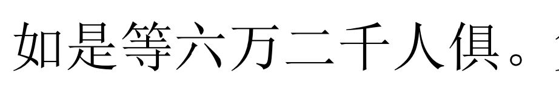
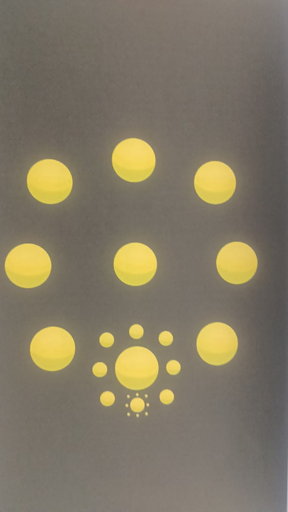
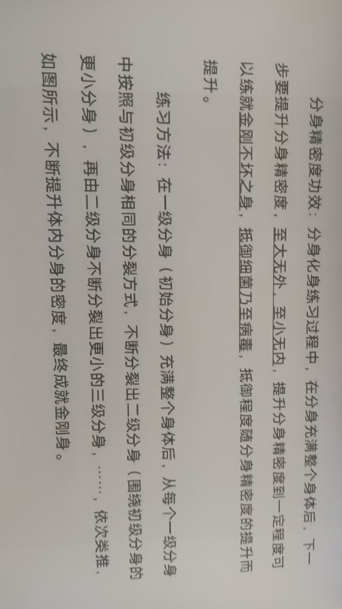
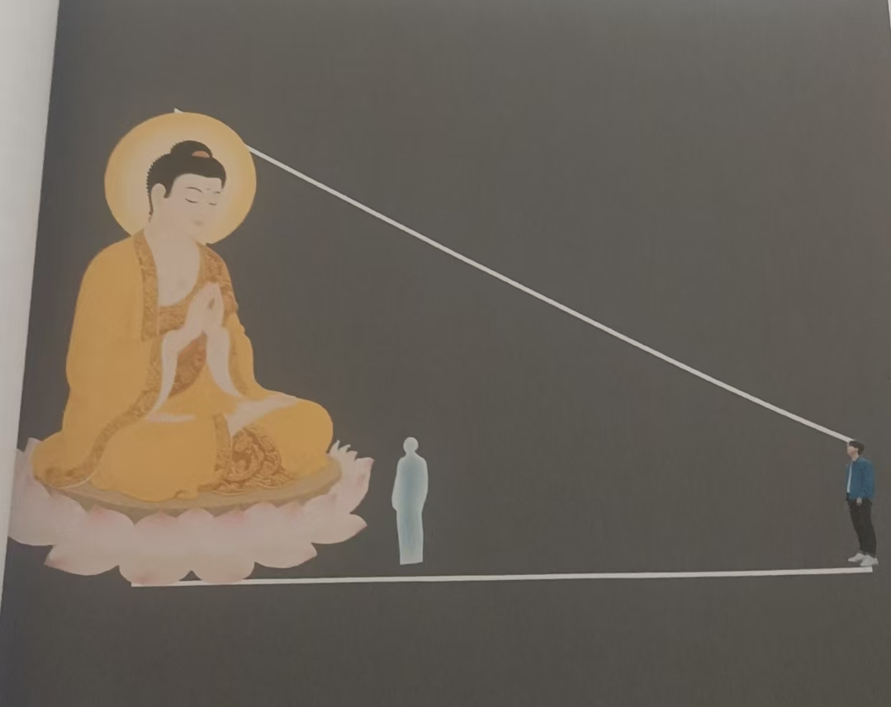
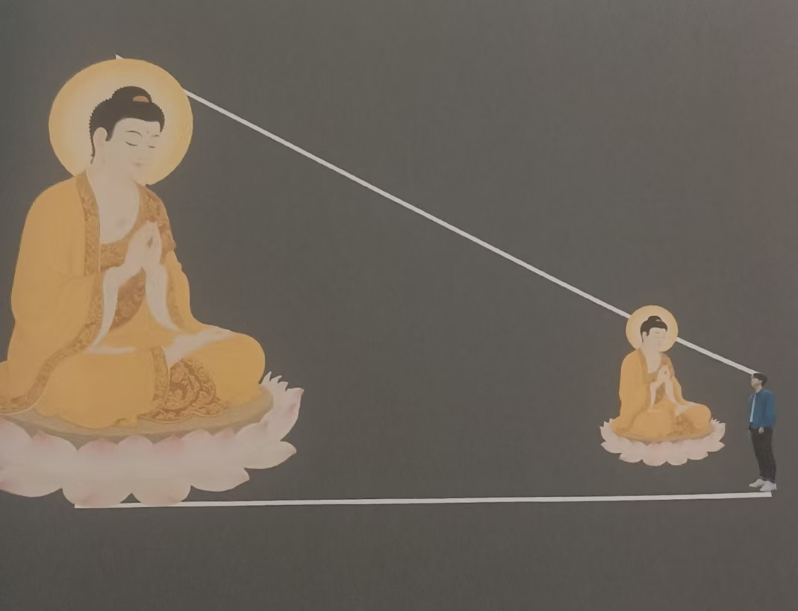

20260227心法 读经
修炼修行 原始对话记录公益拉手，就是通过勤奋，消业
也都看到了，拉手后，手上白亮光越来越厚
业障就是灰黑
白亮光就化这灰黑
越白亮，人越顺利
财也就越大
我这白亮光如何[抱拳]
体内有强光
看来是练得很勤奋
必须的[呲牙]
不过，体表跟一些小地方还没化完
没练全
下一步，加入心法
燃烧自己
怎么烧
会上火吗
直到把肉体烧化干净
那就无我了
你用念力那纯净火
[强]
不会上火
见过气焊吗
太亮了
那种，纯净的，明亮的
这就看你的心念
火多大？超过全身？
那要把全身烧光
这是最好的消业方法
好的谢谢
灰黑全化干净
只剩一个纯净光体
这样，时运官运都会提升
直接观想烧熟了冤亲债主吃光了[捂脸]
没有小人
佛光普度
这时候没有冤亲债主
不要让他们来吃烧烤
[捂脸]
这方法就是化冤亲债主的
自己肉身都没了，哪来的冤亲债主
好的
有道理
吾身有患，乃吾有身，及吾无身，患从何来
说的就是这个修法
舍弃自己
常人不敢，
烧坏了咋办
我要没了，父母妻儿，
大把的银子咋整
私欲心，这就让业障干扰了
刚决之意
心法，就是练光明
你看经里，七重宝树，七宝组成
金，银，琉璃，珍珠，玛瑙
全是光明
唯独没有灰黑杂黄
那部经里，一句看到灰黑杂黄滚滚而来，那是邪魔来干扰了，那要派金刚去征战了
分身化身，分身化身，分身化身
能想多大想多大 能想多远想多远
感恩开示[玫瑰]
光明境界越大越好
地球大，太阳系大，银河系大，宇宙般大，多个宇宙般大
好的
至大无垠，至小无内
心法靠自己发挥
您太厉害了
[强]
那厉害啥，这是心法入门
还有更厉害的吗？多指导[呲牙]
道经佛典里都有
所以我也不算泄露天机
我先练烧吧，先烧一段时间，再请您把把关
再去看《僧伽吒经》
没听过
看也不一定能看懂
跟着经里说的，变化
好的，我网上搜一搜看看
十地菩萨成佛的经《》
里面主要说的心法变化
看了就知道了，根本跟不上他说的变化
行，看看
跟上了，你的新境界就很高了
心境界
要能运用自如，还要提升能量
最高一步，还要把能量转化成法力
法身，法眼，法术，法力
就是真法师
一切贤圣皆以无为法而有差别
无为法就是心法
五行大还丹引导进入心法修炼
所以 还处在九转五行阶段，只是基础修炼
拉手是入门
师父布场是看经？
你看《经》开始，
那是在布场
读经书里的景象
一部一部经书
他的场越来越大
那就是根据经的能量，人的思维范围大小定的
开始法会几千人
层次也低

你看这一句
菩提萨埵就六万两千人
还有其他的一万二天子，八千天女
等等
上百万人
往哪里放
所以，他说的只是个场
很大的场
只是高级心法里的初中级心法
最高心法就是分身化身
自己的分身化身
地藏菩萨有句三亿化身
释迦牟尼八十八亿化身佛
这里面都暗藏高级心法修炼
我只是提一下，自己参悟最高明
你看《经》开始， 那是在布场
先布场，进入状态
再如佛亲临
进入境界
进入境界后，经就是视频
用心，别用眼

这就是分身精密度图
大球是大我，小球是小我
大了又大，小了又小
无限小，把图画完整
你会看到一个固体的
这就是真正的金刚不坏

这是咱们同学解释的
可谓领悟到绝妙之处


高级心法实战应用中的
如来，如去
而无所从来去
看到经是一回事
见到有人做到 又是一回事
自己做到了就成就了
我看到孩子穿越 只是光明体
也就是阳神，天人身
如来如去而实无所来去
乍看好像别扭
做到了就明白了
一个病人，咱们的孩子，远程脑屏拍照录像
光化身拿着光化手机去了
带回来，实体手机出现画面，录像
本人并没有离开这个地方
只能说如去
好像是去了，不然，手机里不可能多出录像
再看孩子，还真实的没动
远程治疗疾病，一会病人好了，
我或者法师人并没动
这是如去
好像是去了，不然病怎么好了，肯定是去过，开眼的人能看到
而人实际还真没动
我画了一个佛像，这是我儿子设计的图
实际是很多个图
按照层次分
光化身图
金刚身图
菩萨身图
佛身图
资料里只有这一个
理解就行了
咱们现在的超能孩子，搬运变化之类，多使用的白光身
也就是现在说的平行宇宙身
另外还出现了好多大菩萨大佛转过来的孩子
白光还在色界吧
白光超越色界
三界都在色界
心法即练光明：读经布场与观想入门
一、本页在讲什么
本页是一段关于"心法 读经"的群聊讲记，核心只有一句：心法就是练光明，而大乘经典是练这个"光明"的教材。记录从"拉手后手上白亮光变厚"谈起，一路讲到"燃烧自我""分身化身""读经布场"，语气是修习者之间的经验交流，并非对所有人的承诺。
二、"心法就是练光明"
据本页记录，修习者把"业"视觉化为灰黑色，把"修"视觉化为白亮的、纯净的光——白亮光去化灰黑，越白亮人越顺。所谓"下一步加入心法"，指的是在拉手（入门）之后，用念力观想出纯净的火，把自己观想到"只剩一个光体"。记录用"气焊"的强光作比，强调这种火是"纯净、明亮"的。
需要说明：这属于观想层面的修习描述，是修习者的一种内心意象，不构成任何身体上"烧"的操作，更无功效承诺。记录还引"吾身有患，乃吾有身，及吾无身，患从何来"，说这正是"舍弃自己"的修法。
三、读经是"布场"：经本身就是画面
记录说，看一部经的开头，其实是在"布场"——先布一个场，进入状态，"再如佛亲临"。所以经开头的法会人数越写越大（几千人、几万人、百万），是"场"越来越大，而这个场的大小"根据经的能量、人的思维范围大小"来定。进入状态之后，"经就是视频，用心，别用眼"。这与本集群《华严经 全是心法 一句一像》的"一句一成像"是同一套思路。
四、观想进阶线：拉手→观亮→烧身→分身
把散落的话串起来，本页给出的是一条循序渐进的观想线：
- 拉手：入门，先有"手上白亮光"的体会；
- 观亮/烧身：用纯净火光观想把"灰黑"化净，指向"无我"；
- 分身化身：记录称"分身化身"是最高心法，认为地藏菩萨、释迦牟尼的"多少亿化身"里"暗藏高级心法"；
- 无量光境：光明境界"能想多大想多大"，从房间到地球、银河、宇宙，即"至大无垠，至小无内"。
五、几个关键概念的速查
| 概念 | 本页的讲法 |
|---|---|
| 心法 | 就是"练光明"；无为法即心法 |
| 读经 | 布场、进入状态，之后"经就是视频" |
| 分身化身 | 记录称其为最高心法修炼 |
| 光明境界 | 可无限放大、缩小，至大无垠、至小无内 |
| 进阶 | 五行大还丹 → 心法；最高一步是"能量转化" |
六、常见问题
问：这些说法能照做吗？ 本页是民间修习经验的记录。观想属于个人内心活动，涉及身体感受的描述请勿照搬，更不要用它替代就医或现实判断。
问：为什么反复出现"光明"？ 在传统修习语境里，"光明"是常用的意象（七宝、宝树等），用来收摄注意力、安定心神，本页沿用这套意象来讲"心法"。
七、提醒
- 心法＝练光明，读经＝布场，分身＝最高心法，是本页的三条主线；
- 一切按转述传统说法理解，不做功效承诺；
- 涉及身心不适请就医，不要以修习代替治疗。